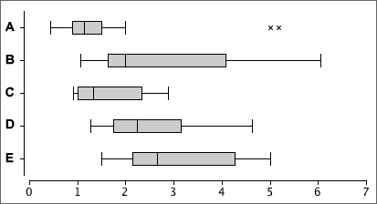
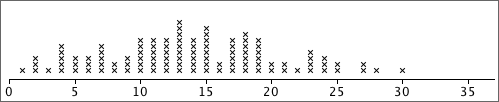

If you don't want to print now,
Density
In a stacked dot plot (or stem and leaf plot), the highest stacks contain the most values. These stacks have the highest density of values.
Mixed class widths
For some data sets, wider classes give a smoother histogram in some ranges of values (e.g. in the tail of a distribution) and narrower classes are better in other parts of the distribution (usually where there is greater density of values).
In a correctly drawn histogram, each value contributes the same area.
Histograms can be drawn with mixed class widths, but it would be badly misleading to make the rectangle heights equal to either the class frequency or relative frequency.

Height of a histogram rectangle
To draw a histogram by hand with equal class widths, each class rectangle can be drawn with height equal to its class frequency. If class widths vary, we need to calculate the density for each class with the formula:

and use this for the rectangle heights.
Unhelpful detail when comparing groups
Dot plots, stem and leaf plots and histograms contain a lot of detail about the distribution of values in a data set. This level of detail is useful when examining a single data set, but when several groups of values are being compared, the detail distracts from the main differences between the groups.
For example, the jittered dot plots below do not concisely summarise the differences between the five groups.

Box plots and clusters
Box plots cannot show clusters in data.

Before using a box plot, always look at the data with a dot plot or histogram to make sure that there are no clusters.
Box plots to compare groups
To display the distribution of values in a single set of data, a dot plot or histogram is more useful than a box plot. However for comparison of two or more groups of values box plots are particularly effective — they highlight differences between the centres, spreads of values and skewness of the groups.

It is important to distinguish two types of numerical data.
Dot plots for counts
Dot plots can be used to display count data. However since discrete values are often repeated several times in a data set, the crosses need to be jittered or, preferably, stacked.

If there is a stack for each integer value, the stacked dot plot is a complete representation of the data.
Displaying moderate or large counts
For discrete data sets whose values are large counts, a histogram can be used to give a 'smooth' summary of the shape of the distribution of values.
If the counts are a bit smaller, the exact definition of the histogram classes becomes important. The class boundaries should end in '.5' to ensure that data values do not occur on the boundary of two classes.

Displaying small counts
When the range of values in a discrete data set is small, a histogram can be drawn with class width 1 (and with class boundaries ending in '.5'). These classes are centred on 1, 2, 3, etc.
This can be improved by narrowing the histogram rectangles into bars to emphasise the discrete nature of the data. This is called a bar chart.